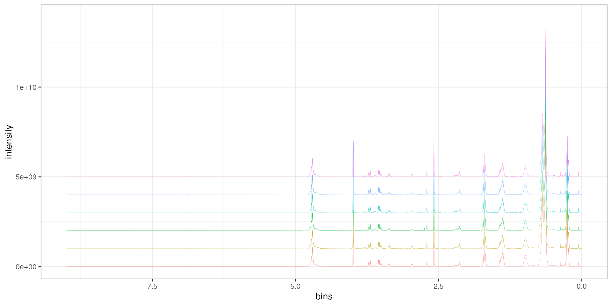
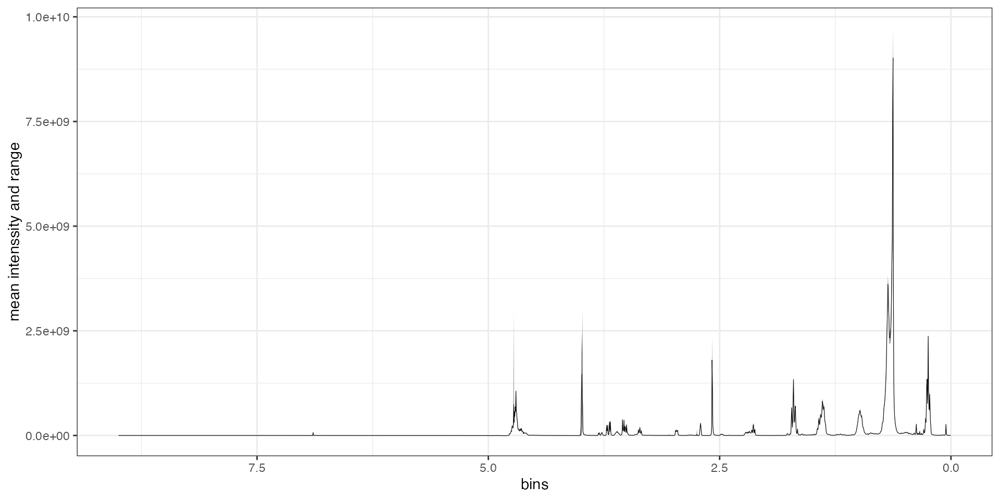
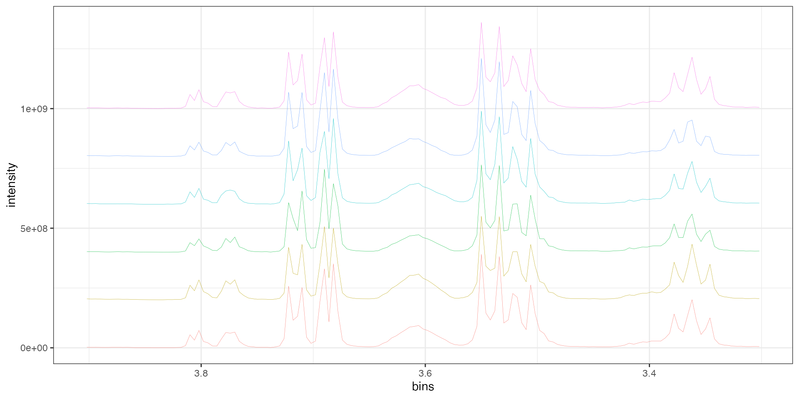
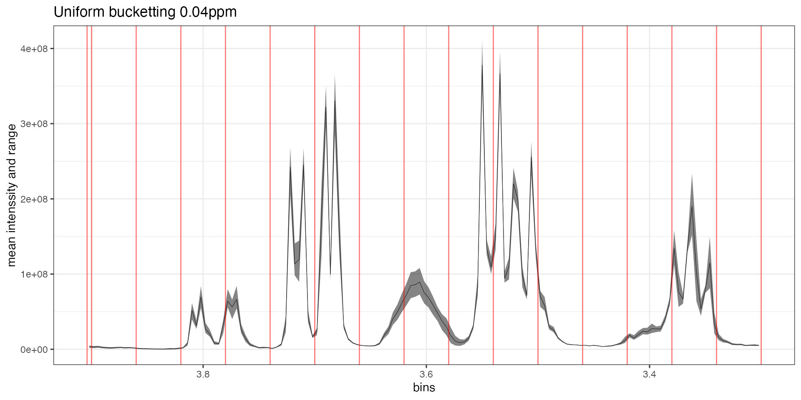
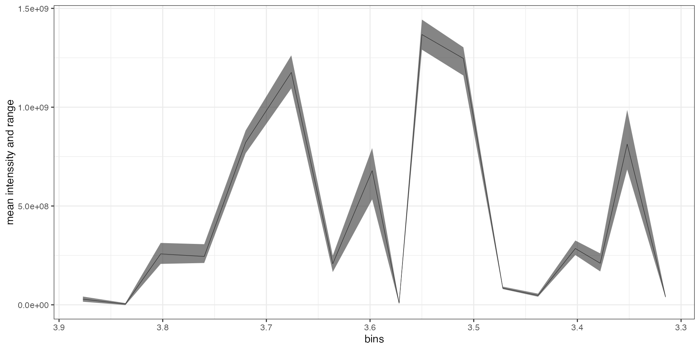

Introduction
The autoplot method provides a simple plotting interface to easily produce plots of the spectra contained in a collection in their current processing status.
library(tidyverse)
#> ── Attaching packages ─────────────────────────────────────── tidyverse 1.3.0 ──
#> ✔ ggplot2 3.3.3 ✔ purrr 0.3.4
#> ✔ tibble 3.0.6 ✔ dplyr 1.0.4
#> ✔ tidyr 1.1.2 ✔ stringr 1.4.0
#> ✔ readr 1.4.0 ✔ forcats 0.5.1
#> ── Conflicts ────────────────────────────────────────── tidyverse_conflicts() ──
#> ✖ dplyr::filter() masks stats::filter()
#> ✖ dplyr::lag() masks stats::lag()
library(tidySpectR)
#>
#> Attaching package: 'tidySpectR'
#> The following object is masked from 'package:tidyr':
#>
#> extractBasic usage
First let us have a look at the fa_nmr dataset that is provided with this package:
print(fa_nmr)
#> Spectra collection containing 6 entries.
#> Number of bins: 2250
#> Limits: -2.123166e-05 8.999979
#> Normalized: FALSE
#> Bucketted: FALSE
#> Labels: conventional organic
autoplot(fa_nmr)
This is a bit clutered so we can try to separate a bit the spectra. For this we can play with two parameters: offset_y and offset_x which will offset each spectra on their respective axes.
The offset value must be provided in the axis unit!
autoplot(fa_nmr, offset_y = 1e+09) +
theme(legend.position = "none")
autoplot(fa_nmr, offset_y = 1e+09, offset_x = 1) +
theme(legend.position = "none")If we are not interested in visualizing individual spectra we can simply plot the average supectrum of the label-average spectra. In this case the average spectrum will be respresented by a solid line and the range of data by a transparent ribbon.
autoplot(fa_nmr, type = "average") +
theme(legend.position = "none")
autoplot(fa_nmr, type = "label_average", offset_y = 1e+09, offset_x = 1)
Plotting specific regions
It is possible to look at a specific region by preprocessing the collection with the extract method Let’s take a closer look at what is happening in the 3.3 - 3.9 ppm region:
fa_nmr %>%
extract(from = 3.3, to = 3.9) %>%
autoplot(offset_y = 2e+08) +
theme(legend.position = "none")
Controlling bucketting
Visualization is especially needed to control the bucketting process. Let’s try different bucketting methods and check their results on the raw spectra.
For this example we will focus only on the 3.3 - 3.9 ppm region.
uniform <- fa_nmr %>%
extract(from = 3.3, to = 3.9) %>%
bucket_uniform(width = 0.04) %>%
pull_breaks()
fa_nmr %>%
extract(from = 3.3, to = 3.9) %>%
autoplot(fa_nmr, type = "average") +
geom_vline(xintercept = uniform, color = "red", alpha = 0.5) +
theme(legend.position = "none") +
ggtitle("Uniform bucketting 0.04ppm")
opti <- fa_nmr %>%
extract(from = 3.3, to = 3.9) %>%
bucket_optimized(initial_width = 0.04, slackness = 0.25) %>%
pull_breaks()
fa_nmr %>%
extract(from = 3.3, to = 3.9) %>%
autoplot(fa_nmr, type = "average") +
geom_vline(xintercept = opti, color = "red", alpha = 0.5) +
theme(legend.position = "none") +
ggtitle("Optimized bucketting 0.04ppm")This could still be optimized but we can now visualize the processed data.
fa_nmr %>%
extract(from = 3.3, to = 3.9) %>%
bucket_optimized(initial_width = 0.04, slackness = 0.25) %>%
autoplot(type = "average")